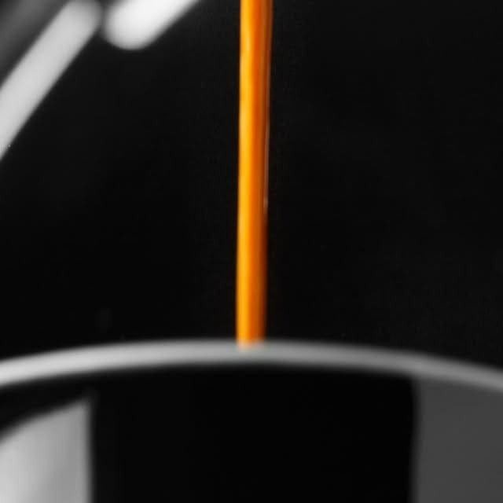
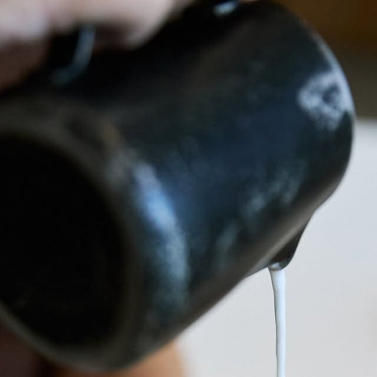
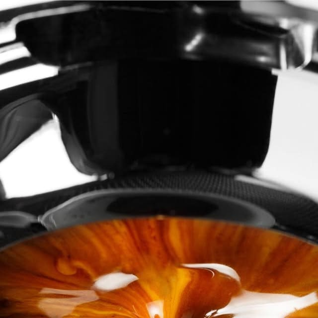
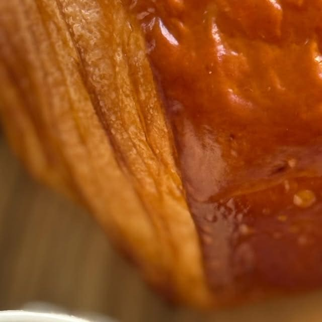

La Carta
Nueva carta, hecha a mano
Café de especialidad, tés de origen y una cocina corta de desayuno: tostadas de masa madre ecológica de larga fermentación y brioche hojaldrado hecho en NEPO. Bebida vegetal (avena, almendra o soja) sin coste extra en cualquier café.





Cafés de especialidad
Espresso y filtro. La base de todo lo que pasa en la barra.
Solo
2,80 €Espresso corto.
Cortado
3 €Espresso con un punto de leche texturizada.
Flat White
3,50 €Espresso y leche sedosa. No es espuma: es textura.
El de la casa
Cappuccino
3,50 €Espresso, leche y una capa de espuma más generosa.
Latte
3,50 / 4 / 4,50 €Suave y largo, en tres tamaños.
Mocha
4,20 / 5,20 €Espresso, chocolate y leche.
Long Black
2,80 €Espresso sobre agua caliente.
Batch Brew
3,70 / 4,70 €Café de filtro preparado por lotes.
Pour Over
6 / 9 €Filtrado a mano, taza a taza. Pregunta por el grano de hoy.
Té, matcha y chocolate
Tés de origen, matcha y opciones sin teína.
Matcha Latte
4 / 5 €Té verde japonés en polvo con leche.
Black Chai Latte
4 / 5 €Té negro especiado con leche.
Sencha Verde
3,50 €Blanco Himalaya
3,50 €Malawi Earl Grey
3,50 €Hojicha Latte
4 / 5 €Té verde tostado con leche.
Sin teína
Rooibos Chai
3,50 €Sin teína
Rooibos Latte
4 / 5 €Sin teína
Golden Milk
4 / 5 €Leche con cúrcuma y especias.
Sin teína
Infusión herbal
3,50 €Sin teína
Chocolate a la taza
4 €55 % Ecuador o 70 % Nicaragua.
Bebidas frías
Extracciones en frío y versiones con hielo.
Cold Brew
4,20 €Café extraído en frío.
Iced Espresso Latte
4,80 €Iced Matcha / Chai Latte
5,30 €Matcha / Espresso Tonic
6 €Cold Brew de té verde
4,20 €Zumo de naranja natural
3,80 / 4,80 €Kombucha
4 €Fever-Tree
3,50 €
Tostadas
Masa madre ecológica de larga fermentación. Sin gluten: pan 100 % trigo sarraceno ecológico (+0,60 €).
Aceite y tomate
3,80 €Aceite de oliva virgen extra y tomate natural.
Mantequilla y mermelada
4,70 €Mantequilla francesa y mermelada casera.
Aguacate
6,70 €Aguacate, cilantro, AOVE y tomate natural.
Pavo
6,70 €AOVE, tomate natural, canónigos y nuestro pavo a baja temperatura.
Huevo-piquillo
7 €Huevos revueltos, canónigos, mayo de piquillo y crujiente de cebolla.
Jamón ibérico*
7,50 €AOVE, tomate natural y jamón ibérico.
Majorera
8 €Almogrote con guacamole y almendras.
Pavo & Guaca
11 €Pavo a baja temperatura, guacamole, mozzarella de búfala, tomate, pepino y vinagreta de manzana y Dijon.
Huevo & Guaca
11 €Elige pavo, mozzarella, guanciale o jamón ibérico*.
Brioches y buns
Rebanada de pan brioche hojaldrado hecho en NEPO. Buns: bollo de brioche de la casa o mollete de trigo sarraceno sin gluten (+1 €).
French Toast
ConsultarCrema de mascarpone casera, fruta fresca de temporada y sirope de arce.
Brioche, mantequilla y mermelada
5 €Con la mantequilla francesa de nuestro hojaldre y mermelada de higo o frambuesa.
Brioche de pavo y mozzarella
8 €Pavo a baja temperatura, mozzarella de búfala, AOVE y mezcla de pimientas.
Brioche de jamón ibérico*
8 €Bun Huevo & Guaca
11 €Huevos revueltos con guacamole. Elige pavo a baja temperatura, guanciale madurado, mozzarella de búfala o jamón ibérico*.